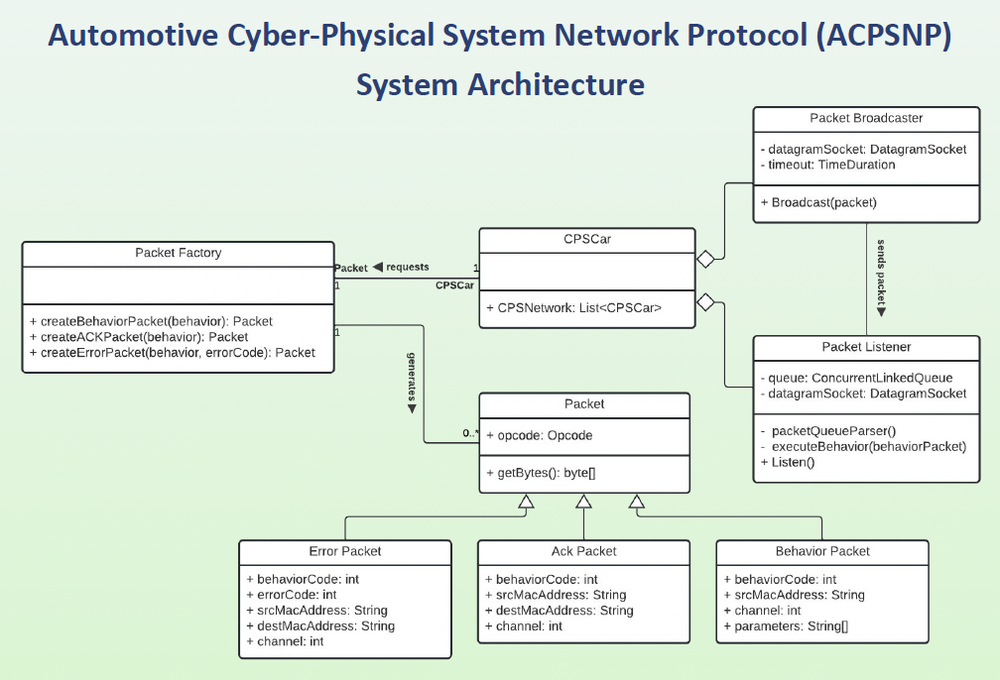

|
Gregory Maldonado Gregory Maldonado is a first year MS in computer science student at Binghamton University. He is currently a graduate research assistant under Dr. Jayson Boubin. Gregory is a software engineer contracted for the Air Force Research Laboratory contributing to a ontological modeling-based Java framework. In the past, Gregory has interned at SRC, Inc. working on fire control radar technology and machine learning for object detection and classification within radar software. SRC, Inc. is a not-for-profit research and development company that develops solutions for customers in the defense, environment and intelligence industries. |

|
ResearchGregory's research interests at Binghamton University include computer networking, cyber-physical systems (CPS) and wireless sensor networks (WSNs). During undergrad, Gregory was a research assistant for the department of computer science at the State University of New York at Oswego focusing on systems engineering and cyber-physical systems. |
|

|
[Automotive] Cyber Physical System Network Protocol (CPSNP)
State University of New York at Oswego Bastian Tenbergen, Ph.D., Gregory Maldonado GitHub / Poster A network protocol designed for Automotive CPS for multicast communication across a dynamic network. |

|
Automotive CPS
State University of New York at Oswego Bastian Tenbergen, Ph.D., Gregory Maldonado GitHub A behavior-centric Cyber Physical Systems Demonstrator using ANKI Overdrive. |
Projects |
|
|
Calibrated Peer Review Tool
State University of New York at Oswego Bastian Tenbergen, Ph.D., Gregory Maldonado, et al. GitHub
A new Learning Management System (LMS) for facilitating calibrated peer reviews
for SUNY Oswego classrooms. |
Education
Thomas J. Watson College of Engineering and Applied Science, Binghamton University |
|
Feel free to steal this website's source code. Do not scrape the HTML from this page itself, as it includes analytics tags that you do not want on your own website — use the github code instead. Also, consider using Leonid Keselman's Jekyll fork of this page. |